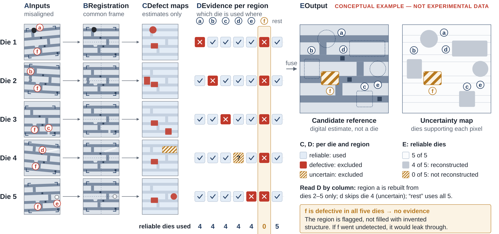

Research question (hypothesis) Can defect-aware fusion of aligned, same-design die images produce a more faithful candidate reference than single-image and conventional fusion baselines, while reliably identifying regions that lack sufficient evidence?
Inspection often compares a die image with a reference; if that reference is itself a real image, its own defects and noise enter the comparison. Same-design dies should show the same pattern while random defects fall in different places, so 4–5 images hold complementary evidence (Fig. 1A). Because they are captured at slightly different positions and angles, they must first be registered into one frame (B). The project estimates which regions are reliable (C), rebuilds the reference from reliable evidence only (D) and flags regions without such evidence (E). The output is a digital reference image, not a fabricated or repaired die; looking clean does not imply electrical function.

Defect classification [4], anomaly segmentation [1, 2], registration and image fusion are established, not new. Segmentation labels what is wrong in one image; this project estimates what the pattern should be, and where that estimate is unsupported. What is tested is the combination of multi-die registration, region-level reliability estimation, evidence-weighted reconstruction and explicit uncertainty for under-observed regions; its novelty must be confirmed by a systematic literature and patent review.
Metrics: fidelity (PSNR, SSIM against the true clean reference), structure (edge, line-width error), defect leakage, registration error and uncertainty quality. The approach is useful only if, on held-out groups, it leaks fewer defects than mean or median fusion at similar fidelity, beats a single-image reference, and concentrates its uncertainty flags on truly unrecoverable regions; negative results will be reported.
| Dataset | Content (provider description) | Annotation | Groups / clean ref.? | Licence |
|---|---|---|---|---|
| Carinthia [3] | 4,591 SEM images; one layer, unstructured wafers | Image-level class (6 classes) | No / No | not verified |
| Carinthia-S [3] | Same images, enhanced release | Binary defect masks + class | No / No | CC BY 4.0 (unverified) |
| MVTec AD [1] | 5,354 images, 15 object/texture categories | Pixel masks; defect-free train set | No / No (unpaired) | CC BY-NC-SA 4.0 |
| MVTec AD 2 [2] | >8,000 images, 8 scenarios, varied lighting | Pixel masks (private test withheld) | No / No (unpaired) | CC BY-NC-SA 4.0 |
“Groups” means same-design image groups with complementary defects; “clean ref.” means a defect-free reference of the same die. None provides multi-die reconstruction ground truth, so the project needs a controlled synthetic benchmark (known shifts, noise and inserted real defects give an exact reference) and real same-design groups via industry collaboration to test transfer.